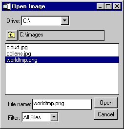

The CW_FILESEL function is a compound widget for file selection.
This routine is written in the IDL language. Its source code can be found in the file cw_filesel.pro in the lib subdirectory of the IDL distribution.
Result = CW_FILESEL ( Parent [, / FILENAME ] [, FILTER = string array ] [, / FIX_FILTER ] [, / FRAME ] [, / IMAGE_FILTER ] [, / MULTIPLE | , / SAVE ] [, PATH = string ] [, TAB_MODE = value ] [, UNAME = string ] [, UVALUE = value ] [, / WARN_EXIST ] )
This function returns the widget ID of the newly-created file selection widget.
The widget ID of the parent.
Set this keyword to have the initial filename filled in the filename text area.
Set this keyword to an array of strings determining the filter types. If not set, the default is “All Files”. All files containing the chosen filter string will be displayed as possible selections. “All Files” is a special filter which returns all files in the current directory.
Note: You can use language catalogs to internationalize this value with strings in particular languages.
Example:
FILTER=["All Files", ".txt"]
Multiple filter types may be used per filter entry, using a comma as the separator.
Example:
FILTER=[".jpg, .jpeg", ".txt, .text"]
If set, the user can not change the file filter.
If set, a frame is drawn around the widget.
If set, the filter “Image Files” will be added to the end of the list of filters. If set, and FILTER is not set, “Image Files” will be the only filter displayed. Valid image files are determined from QUERY_IMAGE.
If set, the file selection list will allow multiple filenames to be selected. The filename text area will not be editable in this case. It is illegal to specify both /SAVE and /MULTIPLE.
Set this keyword to the initial path the widget is to start in. The default is the current directory.
Set this keyword to create a widget with a “Save” button instead of an “Open” button. It is illegal to specify both /SAVE and /MULTIPLE.
Set this keyword to one of the values shown in the table below to determine how the widget hierarchy can be navigated using the Tab key. The TAB_MODE setting is inherited by lower-level bases and child widgets unless it is explicitly set on an individual widget.
Note: It is not possible to tab to disabled (SENSITIVE=0) or hidden (MAP=0) widgets.
Valid settings are:
|
Value |
Description |
|
0 |
Disable navigation onto or off of the widget. This is the default. Child widgets automatically inherit the tab mode of the parent base as described in Inheriting the TAB_MODE Value . |
|
1 |
Enable navigation onto and off of the widget. |
|
2 |
Navigate only onto the widget. |
|
3 |
Navigate only off of the widget. |
Note: In widget applications on the UNIX platform, the Motif library controls what widgets are brought into and released from focus using tabbing. The TAB_MODE keyword value is always zero, and any attempt to change it is ignored when running a widget application on the UNIX platform. Tabbing behavior may vary significantly between UNIX platforms; do not rely on a particular behavior being duplicated on all UNIX systems.
Set this keyword to a string that can be used to identify the widget in your code. You can associate a name with each widget in a specific hierarchy, and then use that name to query the widget hierarchy and get the correct widget ID.
To query the widget hierarchy, use the WIDGET_INFO function with the FIND_BY_UNAME keyword. The UNAME should be unique to the widget hierarchy because the FIND_BY_UNAME keyword returns the ID of the first widget with the specified name.
The “user value” to be assigned to the widget.
Set this keyword to produce a question dialog if the user selects a file that already exists. This keyword is useful when creating a “write” dialog. The default is to allow any filename to be quietly accepted, whether it exists or not.
You can use the GET_UVALUE and SET_UVALUE keywords to WIDGET_CONTROL to obtain or set the user value of this widget. Use the command to read the currently selected filename (or filenames if MULTIPLE is set) including the full path:
WIDGET_CONTROL, id, GET_VALUE=filenames
To set the value of the filename, use the following command:
WIDGET_CONTROL, id, SET_VALUE= value
where value is a scalar string (or string array) containing the filenames, including the full path.
See Creating a Compound Widget for a more complete discussion of controlling compound widgets using WIDGET_CONTROL and WIDGET_INFO.
CW_FILESEL generates an event that specifies the name of the selected file, whether the user completed the file selection operation, and the filename filter used. This widget generates event structures with the following definition:
Event = {FILESEL_EVENT, ID:0L, TOP:0L, HANDLER:0L,VALUE:'',
DONE:0L, FILTER:''}
The ID field is the widget ID of the CW_FILESEL widget. The TOP field contains the widget ID of the top-level widget. The HANDLER field is always set to zero. The VALUE field is a string containing the most recent filename selected, if any.
Note: Even if MULTIPLE is set, VALUE will only contain the most recently selected filename. To retrieve all of the currently selected filenames, use the GET_VALUE keyword to WIDGET_CONTROL.
The DONE field can be any of the following:
|
0 |
User selected a file but didn’t double-click, or the user changed filters (in this case the VALUE field will be an empty string) |
|
1 |
User pressed “Open”/“Save” or double-clicked on a file |
|
2 |
User pressed “Cancel” |
The FILTER field is a string containing the current filter.
This example creates a CW_FI LESEL widget that is used to select image files for display. Note how the DONE tag of the event structure returned by CW_FILESEL is used to determine which button was pressed, and how the VALUE tag is used to obtain the file that was selected:
PRO image_opener_event, event
WIDGET_CONTROL, event.top, GET_UVALUE=state, /NO_COPY
CASE event.DONE OF
0: BEGIN
state.file = event.VALUE
WIDGET_CONTROL, event.top, SET_UVALUE=state, /NO_COPY
END
1: BEGIN
IF (state.file NE '') THEN BEGIN
img = READ_IMAGE(state.file)
TV, img
ENDIF
WIDGET_CONTROL, event.top, SET_UVALUE=state, /NO_COPY
END
2: WIDGET_CONTROL, event.top, /DESTROY
ENDCASE
END
PRO image_opener
DEVICE, DECOMPOSED=0, RETAIN=2
base = WIDGET_BASE(TITLE ='Open Image', /COLUMN)
filesel = CW_FILESEL(base, /IMAGE_FILTER, FILTER='All Files')
file=''
state = {file:file}
WIDGET_CONTROL, base, /REALIZE
WIDGET_CONTROL, base, SET_UVALUE=state, /NO_COPY
XMANAGER, 'image_opener', base
END
This code opens the following dialog:
|
 |
|
5.3 |
Introduced |
|
6.1 |
Added TAB_MODE keyword |